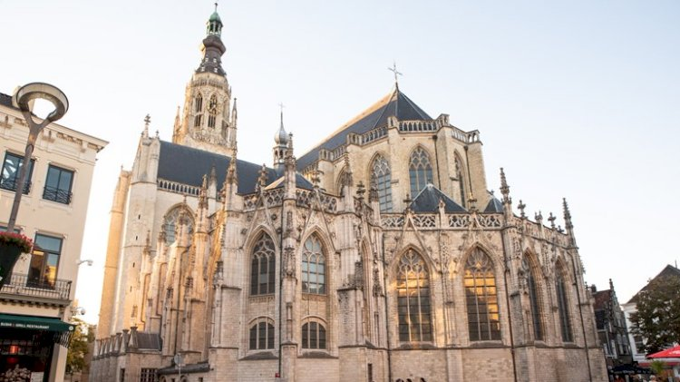
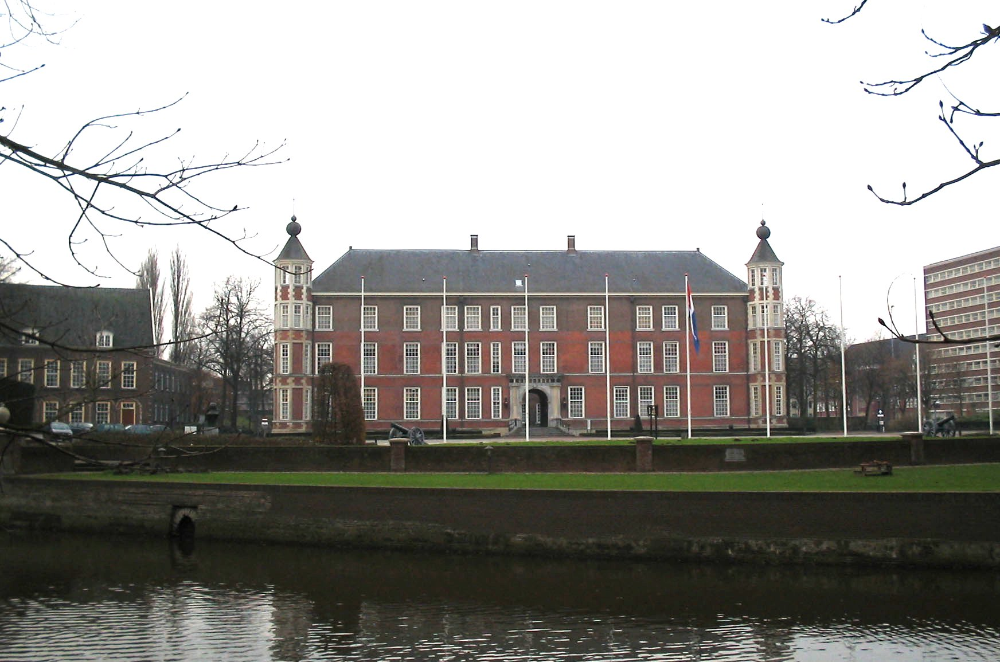

- Van oudsher is Breda de belangrijkste stad van West-Brabant.
- De gemeente Breda telt 185.000 inwoners en is daarmee de negende gemeente van Nederland
- Militair gezien is Breda altijd al een belangrijke stad geweest. Tegenwoordig bevinden de Koninklijke
Militaire Academie en het hoofdkwartier van de Koninklijke Luchtmacht zich nog in de stad.
- De eerste vermelding van de naam Breda dateert van 1125
- In 1252 kreeg Breda stadsrechten
Lorem

Etiam viverra aliquam sem. Sed eu viverra odio. Nulla auctor quam a mi luctus, sit amet iaculis purus
ultrices. In in condimentum enim. Fusce id sem porttitor, cursus lacus accumsan, convallis lectus. Nulla
nec lacus eget mi auctor tristique. Nunc risus enim, feugiat ac enim ac, finibus placerat mi. Ut et eros
lacus. Etiam vel risus vel nibh luctus suscipit sit amet a neque. Sed orci risus, tristique eu elit nec,
congue tincidunt sapien.
Ipsum

Etiam viverra aliquam sem. Sed eu viverra odio. Nulla auctor quam a mi luctus, sit amet iaculis purus
ultrices. In in condimentum enim. Fusce id sem porttitor, cursus lacus accumsan, convallis lectus. Nulla
nec lacus eget mi auctor tristique. Nunc risus enim, feugiat ac enim ac, finibus placerat mi. Ut et eros
lacus. Etiam vel risus vel nibh luctus suscipit sit amet a neque. Sed orci risus, tristique eu elit nec,
congue tincidunt sapien.